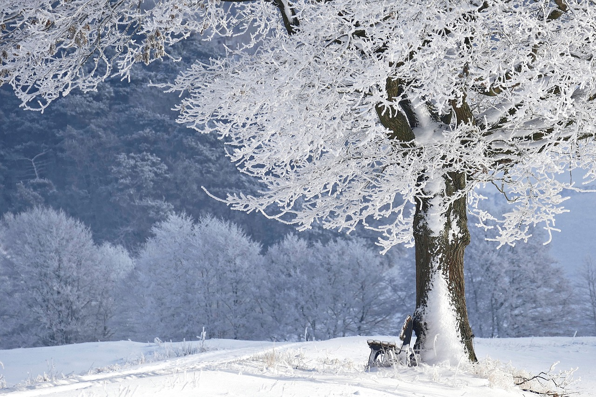

Four Seasons
Life stirs again as blooms burst forth, painting the earth in soft pastels and endless possibilities

The world basks in golden warmth, where long days invite adventure under an endless blue sky.

A quiet magic fills the air as leaves fall like confetti, celebrating nature's grand finale.

The world wraps itself in a blanket of frost, whispering stories of stillness and renewal.